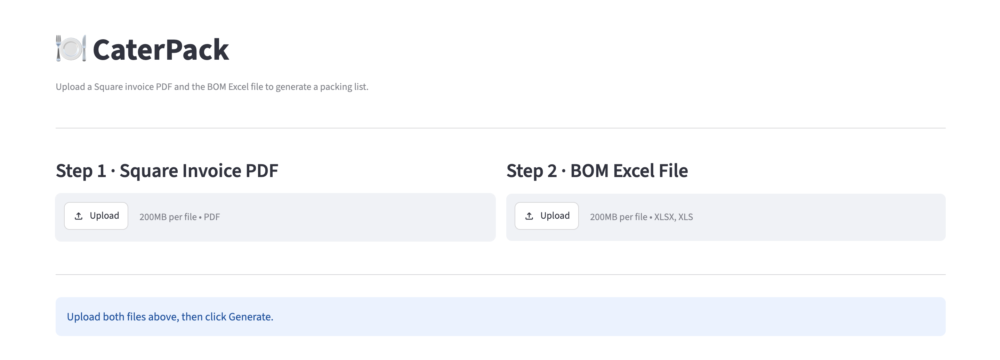

Is that 82 trays, or 82 guests?
Client project · Process automation · Built with Claude Code · Python · Streamlit
Built for a food service client. The screenshots and sample files use made-up data, not the client's invoices or recipes.

A food service client was building catering packing lists by hand. For every invoice, the team had to work out what each dish needs, multiply it by the quantity ordered, and add the serviceware, all calculated manually. The process was error-prone, and one missed item meant a costly return trip in the catering truck, or a ruined customer event.
The client needed packing lists that were accurate every time, and fast enough to produce for every order. The challenge is that an invoice only says how many. Is 82 a count of trays, or of guests? Is 40 a count of rolls when the recipe is built per dozen? The solution had to interpret each quantity correctly, convert units, and flag anything it couldn't resolve for a person to review.
Turning one catering invoice into a packing list.
By hand
Every step is manual, and one slip means a missing item.
With CaterPack
The tool does the reading, matching, and math, and tells you what it couldn't resolve.
The left column shows what the manual process involves. Made-up example.
CaterPack turns a Square invoice into a complete packing list in one step. I built it with Claude Code.
CaterPack replaces a manual, error-prone process with a one-step workflow, and it shows its work: the recipe each dish matched, the quantities that were rounded, and the exceptions it couldn't resolve. It was built and deployed in May and June 2026, with client adoption planned for summer 2027.
| Aspect | Before | With CaterPack |
|---|---|---|
| How the list is made | By hand, calculated manually | One step, straight from the invoice |
| Accuracy | Error-prone, with items easy to miss | Rules applied the same way every time, with exceptions flagged |
| The cost of a miss | A return trip in the catering truck, or a ruined event | Designed to surface gaps before the truck leaves |
Projected impact: hundreds of hours of manual work saved each year, and fewer missed items, return trips, and disrupted events.